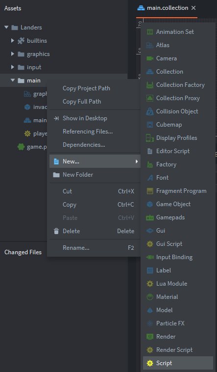
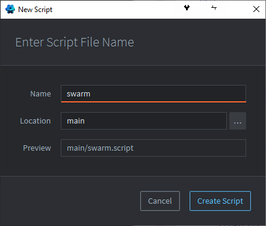
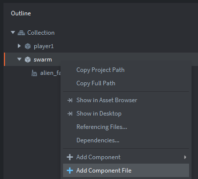

Tutorials for 2D games projects
Landers | Writing the script to spawn the invaders.
- In the assets panel, right click the 'main' folder, and select, 'New...', 'Script'.

- Set the 'Name' property to be, 'swarm' and click, 'Create Script'.

- In the editor window, above the init function, make a new user-defined function to spawn the invaders.
function new_swarm(self)
-- spawn invaders
self.swarm_table = {}
self.speed = 100
self.direction = 1
local pos
local invader_id
-- set position of the invader on the scren
for y = 500,290,-70 do
for x = 100,550,75 do
pos = vmath.vector3(x,y,0)
invader_id = factory.create("#alien_factory", pos)
-- hold refrence to invader
table.insert(self.swarm_table,invader_id)
end
end
endWe could put this code in the init function, but ideally we want to create a reusable program component so that the swarm of invaders can be spawned both at the start of the game and when they are all destroyed. By using the computational method of thinking ahead we can write better, more maintainable code.
The swarm has three attributes:
swarm_table is a dictionary or associative array data type that will hold the Id of the spawned invaders. This will allow us to iterate over all the invaders.
speed is the speed we want the invaders to be moving. By using a variable instead of hard-coding we can change this when a new wave is spawned if we wanted to.
direction is the direction of travel. -1 for left and +1 for right, just as we did for the player ship.
pos is a local variable holding a vector3 of where we want the invader to be spawned.
invader_id is a local variable. When a factory creates an object it is assigned an 'Id' property. If we capture this and put it in the swarm_table we can refer to the object later.
A nested loop is used to create rows and columns of invaders. The values used in the for loop refer to the x and y spawning positions. E.g. y = 500 means we want to spawn the first invader at y position 500 on the screen. The loop counts down in -70 increments to 290. This will space the invaders out vertically by making them 70 pixels apart. Changing the number 290 will determine the number of rows created. The same principle is used for the x position.
pos is a local vector3 variable set to the x and y position from the nested for loop.
invader_id is assigned the Id of the invader created by the alien_factory. The factory.create function takes a number of parameters. The first is the Url of the factory to use. The second is the spawning position. In the Incoming tutorial we saw how it was possible to use these parameters.
Lastly, table.insert appends a new item to the spawn_table. We put the Id of the spawned invader in the table.
- Change the init function to call our user-defined function.
function init(self)
new_swarm(self)
endnew_swarm is called, passing the attributes of the swarm game object as a parameter. Here we are passing by reference because any changes we make to the attributes in the new_swarm function need to be applied to the game object and not lost at the end of the function.
If you run the program at this point, it still won't work. Remember we need to add the script to the main.collection.
- In the assets panel, in the 'main' folder, double click, 'main.collection'.
- In the outline panel, right click the 'swarm' game object and select, 'Add Component File'.

- Select, '/main/swarm.script' and click, 'OK'.
- Save the changes by pressing CTRL-S or 'File', 'Save All'.
- Run the program by pressing F5 or choosing, 'Debug', 'Start / Attach' from the menu bar. You should see the invaders on the screen.

The next stage is to get the invaders moving. Stage 4 >
 Craig'n'Dave | Version 1.3
Craig'n'Dave | Version 1.3